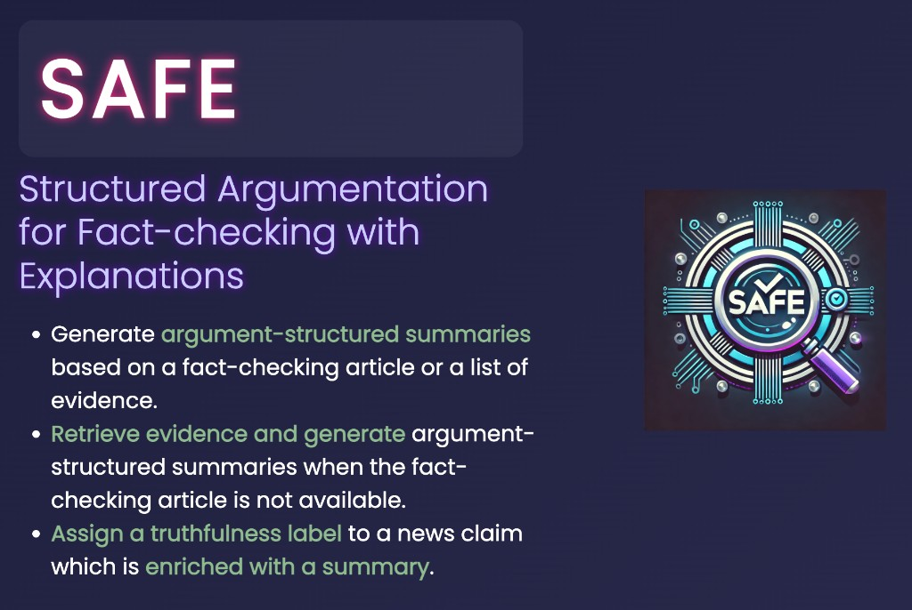
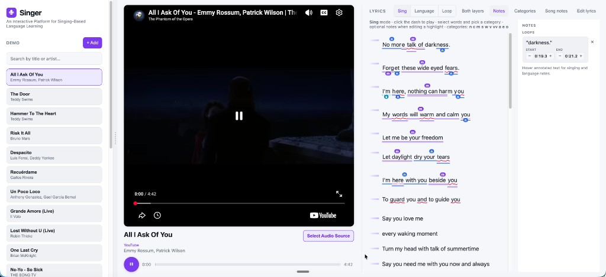
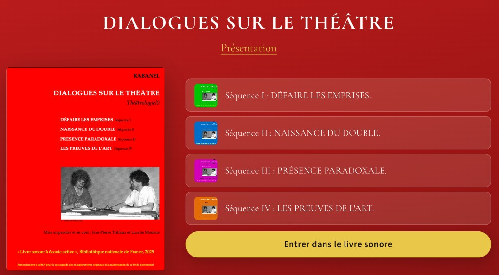
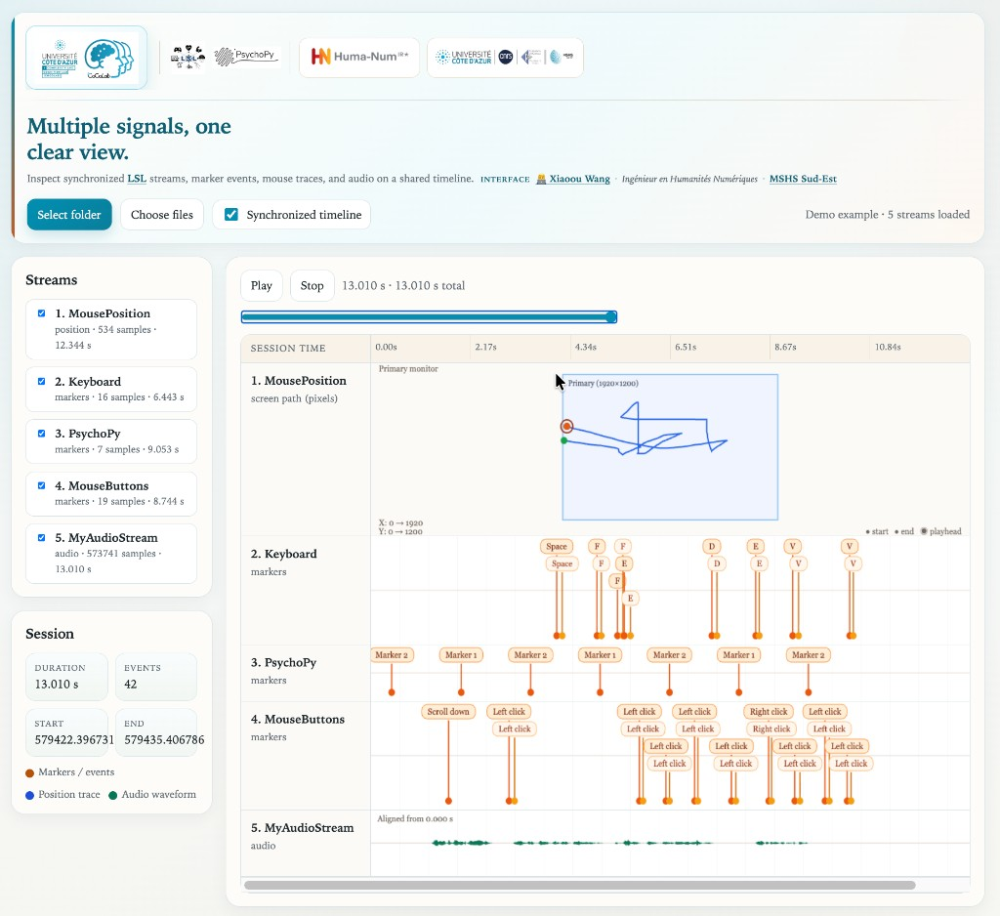
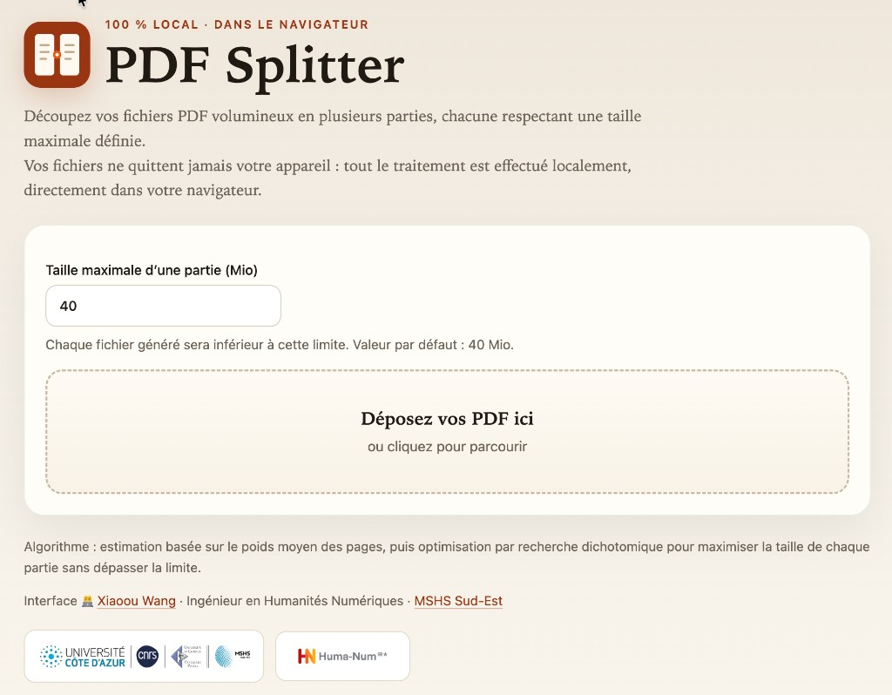

SAFE
Argumentation structurée pour la vérification des faits avec explications
Résumés structurés en arguments, récupération de preuves et étiquettes de véracité explicables.
Ouvrir la démo
Doctorat en Informatique, spécialisé en Traitement Automatique des Langues, réalisé au Laboratoire d'Informatique, Signaux et Systèmes (i3S) & Inria
Ingénieur à la MSHS Sud-Est, accompagnant plus de 18 laboratoires dans le développement de projets en humanités numériques.
Prototypes interactifs conçus et développés à la MSHS Sud-Est dans le cadre de mes missions, pour soutenir la recherche, l'enseignement et la médiation en humanités numériques.

Argumentation structurée pour la vérification des faits avec explications
Résumés structurés en arguments, récupération de preuves et étiquettes de véracité explicables.
Ouvrir la démo
Plateforme interactive d'apprentissage des langues par le chant
Paroles synchronisées, boucles et modes d'étude qui transforment les clips musicaux en salle de classe interactive.
Ouvrir la démo
Livre sonore interactif avec question-réponse augmentée par récupération
Un livre sonore actif pour explorer les archives théâtrales de la BnF par une écoute guidée.
Ouvrir la démoAnonymisation de textes respectueuse de la vie privée, dans votre navigateur
Détection d'entités, relecture des occurrences et export de rapports d'audit anonymisés en local.
Ouvrir la démo
Plateforme de visualisation synchronisée de données psycho-comportementales multimodales
Interface de visualisation synchronisée de signaux multimodaux (Souris, Clavier, Audio, Vidéo, Oculométrie, Mouvement (QUALISYS), EEG, etc.) enregistrés via Lab Streaming Layer.
Ouvrir la démo
Découpez vos fichiers PDF volumineux en plusieurs parties de taille maximale définie.
Les services d'OCR en ligne, tels que Mistral OCR, imposent une limite de taille pour les fichiers à traiter. Traitement 100 % local dans le navigateur.
Ouvrir la démoWebinaires et ateliers dans le cadre de mes missions de diffusion des bonnes pratiques en humanités numériques.
Et si votre corpus pouvait répondre à vos questions ? Créez votre assistant IA à partir de vos données de recherche
À venirAtelier sur les applications du Deep Learning en littérature
À venirAtelier sur l'IA, l'histoire et l'archéologie
À venirAtelier sur l'annotation assistée par apprentissage automatique avec Label Studio
À venirAtelier sur la construction de votre propre base de données avec Heurist et Omeka
À venirAtelier sur l'analyse et la visualisation de données géospatiales (QGIS, GeoPandas et Leaflet)
À venirCette version de la contribution a été acceptée pour publication, après évaluation par les pairs (le cas échéant), mais n'est pas la Version of Record et ne reflète pas les améliorations post-acceptation ni d'éventuelles corrections. La Version of Record est disponible en ligne : https://doi.org/10.1007/978-3-031-35320-8_37. L'utilisation de cette Accepted Version est soumise aux conditions d'utilisation des manuscrits acceptés de l'éditeur : https://www.springernature.com/gp/open-research/policies/accepted-manuscript-terms